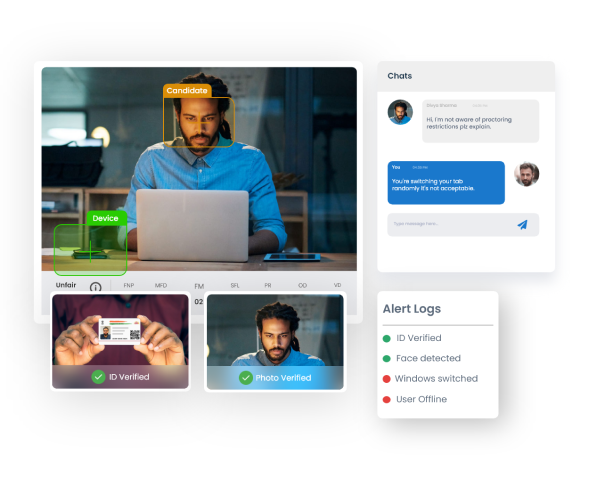

Evolved during the mid-1990s – early 2000s, the new version – Generation-Z or Gen-Z – is swiftly taking over its primitive being – Generation-Y, and has started hailing workplace arena with a storm.
Gen-Z is smart and far advanced while growing as the first fully mobile and digitally connected generation that speaks its own language. They are culturally more gelled with other members of their drove than with the people in their own family. Moreover, their understanding about the world is incomparable to any of their prior counterparts.
Considered to be the most updated and realistic being, Gen-Z is friendly with digital technologies while are passionate to innovate and are entrepreneurs by instinct. Analysts at Brainmeasures anticipate that by 2025, Gen-Z will rule nearly 44% of the total workforce. It is, therefore, critical to get familiar with Gen-Z’s advanced generational tendency and enable organizations building effective workforce engagement strategies, in line with their capabilities.
While on Google, the search combination of ‘Generation Z’ will throw countless search results suggesting you numerous ways to appeal to these radically unique consumers. However, What about Gen-Z as workforce at office? How employers can better showcase their company to stimulate Gen-Z talent to be a part of their teams? Most importantly, what should team managers do to manage and retain Gen-Z as a team resource?
Recently, Brainmeasures Research Team surveyed 780 recruiters and employers across India and brings these handy insights to enable organizations well-manage their Generation-Z employees at Workplace.
Our research team identified these Five Key-Parameters to understand the most relevant facts about Gen-Z that is pushing Indian Human Resource (HR) Managers to alter their overall HR tactics:
Factors to Choose an Employer
Elements to Stick to an Organization for Long
Communication Preferences
Hiring Tools
Workplace Distractions
Workplace Attributes
They Like to be Flexible
Gen-Z is a hardcore follower of their own motto 'Work while Working and Party while Partying'.
They cannot breathe in 9 to 6 working-schedules, and if they get an untroubled work-life balance, they will transition their work-assignments into their hobbies.
They are that capable.
Recruiters are growingly agreeing to this fact, as more than 60% of the surveyed recruiters have already started implementing work strategies to ensure work-life balance to their Gen-Z employees, while almost 20% employers agreed that an open work-culture is critical to ensure consistent engagements with this generation.
Money is not that Matters to themGen-Z is NOT ‘Money-Holic
They are not at-all after money, as none of the recruiters could agree that lucrative salary figures can stimulate this cohort to work consistently and stay with organizations for long.
More than 45% of the respondents strongly agreed that it is primarily the learning opportunities and career growth that can keep Gen-Z engaged and retained. While over 25% of the employers affirmed that meaningful and challenging work-assignments are motivating Gen-Z employees to stay more productive for their organizations.
Blog Technology is not ‘Fully’ their Take
Gen-Z is NOT Tech-Savvy when it is about Serious Official Talks.
This one had immensely surprised the Brainmeasures Research Team, as the survey revealed that Indian Gen-Z prefers one-on-one meeting more than replying over e-Mails or communicating over instant messaging.
About one-half (47%) of the recruiters amazed the Team Brainmeasures by revealing that Gen-Z considers face-to-face chats as the most effective way of official communication over any digital medium. Nearly 27% of the surveyed HR managers stated that Gen-Z prefers instant messaging for daily workplace communication, while over 20% of the respondents agreed that e-mail continues to be the proficient way of office communication.
There are Smart Ways to Connect with Them
Gen-Z is Online and On-Mobile 24x7x365
Online or On-Mobile communication platforms, including social media and instant messaging applications, are gaining fame among the Gen-Zs, empowering recruiters to conveniently access and communicate with this hyper-connected being.
Emphasizing on the online engagements, 32% recruiters preferred web-based job portal for searching and hiring Gen-Zs, while nearly 26% of HR Managers affirmed professional network websites, like LinkedIn, to be the next best place to look for all their workforce needs.
With the rising advent of smart-gadgets, 22% of the respondents confirmed that they have started reaching out to this workforce through mobile phones to close their positions at a fast pace.
These Aspects Ad-Value to their Work Ethics
Gen-Zs Prefer Smart Working
It’s not always about career or commercials, Gen-Zs closely consider other capabilities, and even Google the organization to look out for information like office timing, location, transportation, and others before appearing for the scheduled interview at its premise.
While understanding about the Gen-Z’s preferences for an ideal working environment, more than 50% of recruiters agreed that this new ‘socially active’ being likes to work in flexible hours. While more that 40% respondents agreed that Gen-Z look-out for ultra-modern workplace ambience and innovative architect, where they can enjoy their on-work hours as well as break times.
Best Practices
Gen-Z professionals are potentially competent of adding unique values, expectations, and perspectives to the organizations. These young adults, however, need to improvise their professional capabilities and exploit their zeal to proficiently address the actual workplace situations, including formally communicating, while in official discussions.
Gen-Z is adapted to constant learning, as this modern workforce evolved during the times when technology was easily accessible to them. Though Gen-Z is capable of promptly attuning with new technology, however, has been criticized for its poor writing skills, all attributed to their innovative social media shorthand.